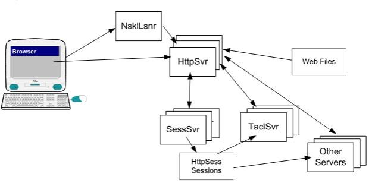

TAS Overview
TIC Application Server (TAS) is a NonStop™ Guardian based application providing some webserver functionality. TAS's primary utility is access to Pathway™ serverclasses. With a request/reply IPC pair is defined for servers wanting to communicate with web browsers.
Key Features
- HTTP Web Server
- Session Manager
- Interface to TACL
- Interface to Pathway Servers (TAL, COBOL, C, or C++)
- Flexible configuration
TAS extends the capability of a traditional Web server to include SSP capability via TACL scripts, and several application-specific gateways for accessing legacy or applications. This allows programmers to dynamically build HTML content based on application or database content. In the case of legacy server environments, which are costly to maintain or modify, there is little or no change required to the application in order to grant access via Internet or intranet Web browsers.
Ready to learn more about Gateway TAS? Contact Us for More Information